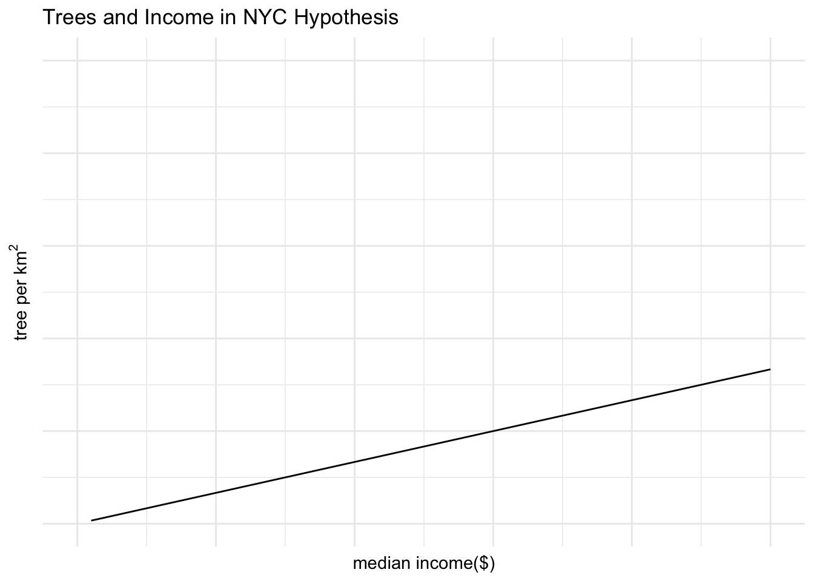
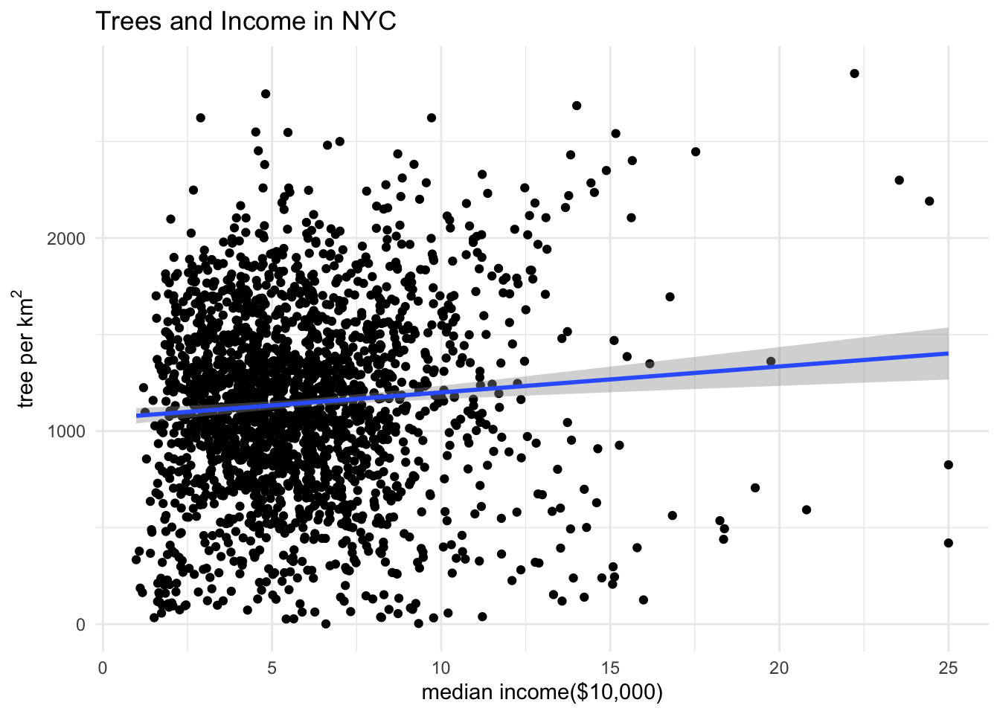

Show the code
# Load necessary libraries
library(tidycensus)
library(tidyverse)
library(here)
library(stars)
library(tidyr)
library(dplyr)
library(units)
library(mapview)Josephine Cardelle
December 12, 2024
More content available at the github repository.
Does money grow (on) trees? Trees and other plants are known to have a natural cooling effect (Shashua-Bar & Hoffman, 2000). For this reason, trees are often used in urban areas to reduce temperatures and the effects of climate change. A study by McDonald et. al., showed that in about 92% of urbanized areas studied, there were tree coverage inequalities between high and low income areas. They also found that high income blocks had on average 15.2% more tree coverage than low income blocks.
In our analysis, we will explore the relationship between median income and trees per km2 in New York City. We will then explore other possible parameters to add to improve our model.
The first step of our analysis is to define our question. The question we will be exploring is “do higher income areas of New York City tend to have more street trees than lower income areas?”
Now that our question is defined, we will come up with our hypothesis and demonstrate on an approximate hypothesis graph. We will then explore our data sets and manipulate them as needed. Our analysis will involve exploring the two data sets separately and then viewing their relationship with each other through a linear regression model. We will also look at the residuals and explore the possibility of adding other parameters to improve the model. Once we have completed our analysis we will discuss our conclusions and takeaways.
Based on previously mentioned research, our hypothesis is that with an increase in median income, there will be an increase in trees per km2 . Here we present a hypothesis graph of what the approximate linear regression model could look like. Our linear regression line will have a positive correlation as we expect the two parameters to have a positive effect on one another.
# Hypothesis graph
df <- data.frame(x = c(1:100))
df$y <- 1/3 * df$x
ggplot (df, aes(x, y)) +
geom_line() +
xlim(0, 50) +
ylim(0, 50) +
labs(title = "Trees and Income in NYC Hypothesis",
x = "median income($)",
y = expression(paste("tree per ", km^2))) +
theme_minimal() +
theme(axis.text.x=element_blank(),
axis.text.y = element_blank())
In order to access the median income for census tracts in New York City we will use the tidycensus package. This is an R package that allows us to access data from the US Census Bureau. This package provides lots of information surrounding populations, age demographics, race/ethnicity, incomes, and more at the census tract level. We will be using data from the 2015 census. We will filter to the following counties: Bronx, Kings (Brooklyn), New York (Manhattan), Richmond (Staten Island), and Queens. We will access the median incomes of census blocks in these 5 counties. We will also use the geometry column of this data set to calculate the area of each census tract.
nyc <- get_acs(
state = "NY",
county = c("Bronx", "Kings", "New York", "Richmond", "Queens"),
geography = "tract",
variables = "B19013_001",
geometry = TRUE,
year = 2015,
progress = FALSE
)
# Add new column to nyc that calculate the area for each census tract
nyc <- nyc %>%
mutate(area_km2 = as.numeric(st_area(geometry)/1e6))
# Add a new column that is income in $10,000 units
nyc$income <- (nyc$estimate/10000)Here we will use a data set that was obtained from New York City’s open data website. This data set is street tree inventory from 2015 and contains nearly 684,000 rows, each corresponding to a street tree. The collection period for this data spanned from May 2015 to October 2016. There are 42 columns of variables including collection data, location, status, health, scientific and common names, and more. The status column contained three types which were alive, dead, and stump. For the purpose of our analysis we filtered to make sure the data set only contained trees that were alive.
[1] "Alive" "Dead" "Stump"In our analysis, we will first visualize incomes in the city. We will map the incomes at the census tract level.
From our map, we can see the incomes in different areas of New York City. We can see the Bronx and Brooklyn tend to be lower income areas while Manhattan is a higher income area.
Next, we will map the trees per km2 in each census tract. We will first have to convert our nyc_trees data set into an sf object using the longitude and latitude columns. We will match the CRS to that of the nyc dataset. We will then combine the two datasets to create a tree count per census tract column. Next we will divide the tree count by the area of that census tract to get our trees per km2 .
# Make trees data set into sf object and set crs to match
nyc_trees_sf <- st_as_sf(nyc_trees_alive, coords = c("longitude", "Latitude"), crs = st_crs(nyc))
# Join trees and income by st_within and count trees in each census tract
nyc_trees_income <- nyc_trees_sf %>%
st_join(nyc, join = st_within) %>%
group_by(GEOID) %>%
summarize(tree_count = n())
# Add tree count data back to income data
treecount_income <- st_join(nyc, nyc_trees_income) %>%
select(-c('GEOID.x', 'GEOID.y'))
# Add tree per km2 column
treecount_income <- treecount_income %>%
mutate(tree_per_km2 = (tree_count/area_km2))
# Map trees per km2
mapview(treecount_income,
zcol = "tree_per_km2",
layer.name = "trees per square kilometer")Something we can notice from this map is that green spaces were not included in the tree count. Although Central Park has nearly 18,000 trees it is recorded in this data as only having 262 trees per km2 . From an initial exploration of this map, the larger census tracts seem to have fewer trees per km2 than the smaller ones.
Now we will analyze the relationship between median income and trees per km2 at the census tract level. We will create a scatter plot with all the census tract points and fit a linear regression model to the data.

Our graph shows a positive correlation between median income and trees per km2, as we predicted. However, from this graph there appears to be large residuals. We will dive further into the linear regression model and analyze the residuals, coefficients, and r2.
Call:
lm(formula = tree_per_km2 ~ income, data = treecount_income)
Residuals:
Min 1Q Median 3Q Max
-1187.90 -307.49 8.64 315.41 1615.92
Coefficients:
Estimate Std. Error t value Pr(>|t|)
(Intercept) 1065.817 23.581 45.199 < 2e-16 ***
income 13.438 3.566 3.769 0.000169 ***
---
Signif. codes: 0 '***' 0.001 '**' 0.01 '*' 0.05 '.' 0.1 ' ' 1
Residual standard error: 479.6 on 2098 degrees of freedom
(67 observations deleted due to missingness)
Multiple R-squared: 0.006725, Adjusted R-squared: 0.006252
F-statistic: 14.2 on 1 and 2098 DF, p-value: 0.0001685Our residual quartiles suggest we have outliers in our data. Our first and third quartile are within about 300 of the median, while the maximum and minimum are 1615.92 and -1187.90, respectively.
Next we will look at the coefficient for income. The income coefficient tells use that for every $10,000 increase in median income there is an average increase of 13.438 trees per km2. However, our r2 is 0.006725. This tells us that only about 0.67% of the variance in trees per km2 is explained by our median income.
Next we are going to map our residuals. This will allow us to explore areas with large residuals.
From our residuals we can see that certain areas have higher residuals than others. For example, the area around Times Square has large negative residuals. This suggests that while it’s a high income neighborhood there are not a high amount of street trees. This could be due to the fact that there are tall buildings in this area and street trees would not survive as well and there is high foot traffic. Conversely, the area around Columbia University has high positive residuals. This could be due to college students not having high incomes while the college may prioritize greenery around the campus.
While our hypothesis of a positive correlation between median income and trees per km2 was correct, our model did not represent the data very accurately. We had high residuals and a low r2. This could be due to many different variables. Firstly, it may be more effective to analyze tree canopy cover instead of tree count. Another parameter we could add to our model in future analyses is building height. Trees would not receive as much sunlight in areas with tall buildings which could lead to there being fewer trees in these areas even if there are high incomes. We could also analyze if foot traffic has an effect on the model. Additional analysis is needed to ensure our model effectively represents the data.
Shashua-Bar, L., & Hoffman, M. E. (2000). Vegetation as a climatic component in the design of an urban street: An empirical model for predicting the cooling effect of urban green areas with trees. Energy and Buildings, 31(3), 221–235. https://doi.org/10.1016/S0378-7788(99)00018-3
McDonald, R. I., Biswas, T., Sachar, C., Housman, I., Boucher, T. M., Balk, D., Nowak, D., Spotswood, E., Stanley, C. K., & Leyk, S. (2021). The tree cover and temperature disparity in US urbanized areas: Quantifying the association with income across 5,723 communities. PLOS ONE, 16(4), e0249715. https://doi.org/10.1371/journal.pone.0249715
U.S. Census Bureau. (2015). Median household income in the past 12 months (in 2015 inflation-adjusted dollars) [Table B19013_001]. Retrieved via R package tidycensus.
Walker, K. (2023). tidycensus: An R package to interact with the U.S. Census Bureau API. Retrieved from https://walker-data.com/tidycensus/
New York City Department of Parks & Recreation. (2015). 2015 Street Tree Census - Tree Data. NYC Open Data. Retrieved Dec. 3, 2024, from https://data.cityofnewyork.us/Environment/2015-Street-Tree-Census-Tree-Data/uvpi-gqnh